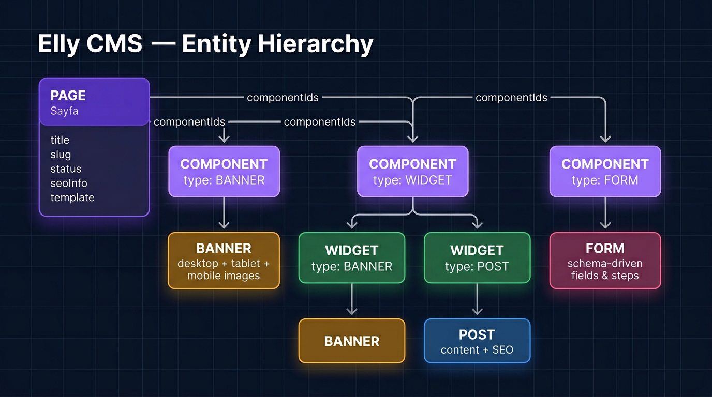
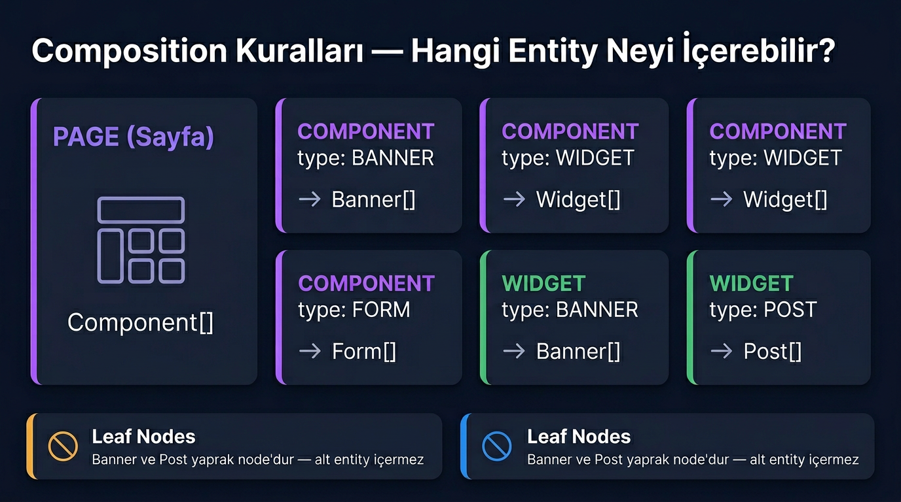
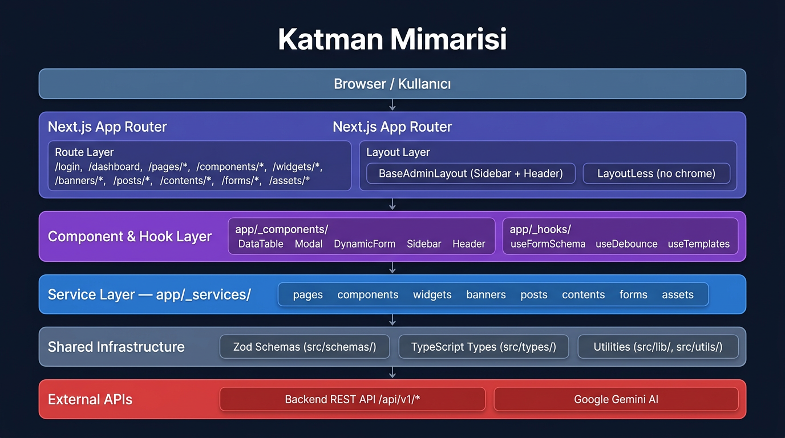
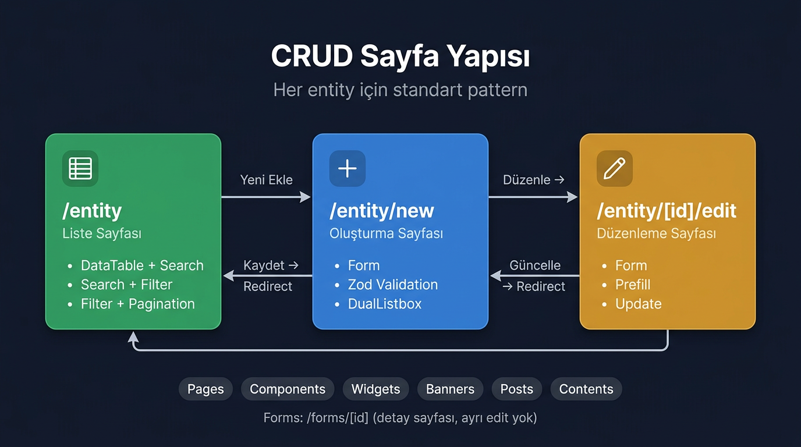
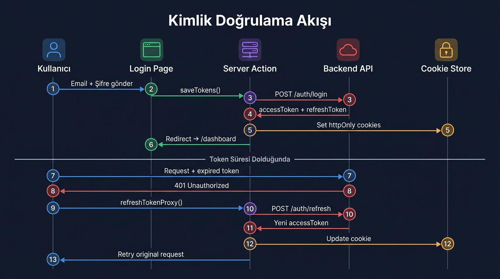
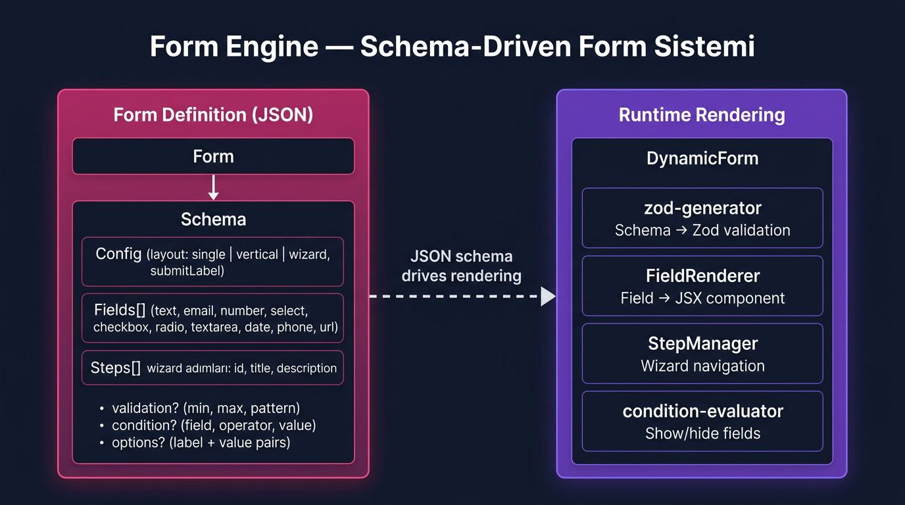

Entity Hiyerarsisi
Elly CMS'in temel veri modeli hiyerarsik bir yapidadir. En ust duzey
Page entity'si, icine Component alir. Her
component tipine gore Banner, Widget veya
Form icerebilir. Widget'lar da kendi icinde Banner veya
Post barindirir.

Bu hiyerarsi, bir web sayfasinin nasil compose edildigini tanimlar. Bir Page birden fazla Component icerir; her Component tipi (BANNER, WIDGET, FORM) farkli alt entity'ler barindirir.
Page (Sayfa)
En ust duzey entity. title, slug, status, template, seoInfo alanlari icerir. Birden fazla Component atanabilir.
Component
Sayfanin yapi taslari. 3 tipi var: BANNER, WIDGET, FORM. Her tipi farkli alt entity barindirir. orderIndex ile siralanir.
Banner
Gorsel icerik birimi. Desktop, tablet, mobile icin ayri image destekler. Link ve target alanlari icerir.
Widget
2 tipi var: BANNER (banner listesi) ve POST (post listesi). Template destekler.
Post (Yazi)
Icerik yazisi. Rich text content, slug, SEO bilgileri icerir. Yaprak node — alt entity icermez.
Form
Schema-driven form. JSON olarak fields, steps ve config saklar. 11 farkli alan tipi destekler.
Composition Kurallari
Her entity sadece belirli alt entity'leri icerebilir. Bu kurallar CMS'in tutarliligini saglar ve frontend tarafinda dogru rendering yapilamasini garantiler.

| Container | Icerebilecegi Entity'ler | Aciklama |
|---|---|---|
Page |
Component[] |
Bir sayfa N adet component icerir |
Component (BANNER) |
Banner[] |
Banner tipindeki component direkt banner icerir |
Component (WIDGET) |
Widget[] |
Widget tipindeki component widget icerir |
Component (FORM) |
Form[] |
Form tipindeki component form icerir |
Widget (BANNER) |
Banner[] |
Banner tipindeki widget banner icerir |
Widget (POST) |
Post[] |
Post tipindeki widget post icerir |
Banner |
— | Yaprak node, alt entity icermez |
Post |
— | Yaprak node, alt entity icermez |
Katman Mimarisi
Uygulama 6 katmandan olusur. Her katman tek bir sorumluluga sahiptir. Veri akisi yukaridan asagiya, kullanicidan API'ye dogru ilerler.

Route Layer
src/app/(baseLayout)/ altindaki CRUD sayfalari. Her
entity icin list, new, edit sayfalari.
Layout Layer
BaseAdminLayout (Sidebar + Header) ve LayoutLess (login sayfasi). Route group'lar ile ayrilmis.
Component Layer
app/_components/ altinda colocated. DataTable, Modal,
DynamicForm, ImageUploadBox gibi paylasilan UI parcalari.
Service Layer
app/_services/ altinda her entity icin CRUD
servisleri. Backend API'ye fetcher uzerinden istek
atar.
Shared Infrastructure
Zod semalari, TypeScript tipleri, utility fonksiyonlari. Tum katmanlar tarafindan kullanilir.
External APIs
Backend REST API (/api/v1/*) ve Google Gemini AI. Dis
bagimliliklari temsil eder.
Colocated Pattern: Admin paneline ozel component,
service, hook ve util dosyalari src/app/_components/,
_services/, _hooks/, _utils/
altinda colocated tutulur. Basta underscore (_) kullanilarak Next.js
routing'den dislanir.
CRUD Sayfa Yapisi
Her entity icin standart bir CRUD pattern uygulanir: Liste, Olusturma ve Duzenleme. Bu desen Pages, Components, Widgets, Banners, Posts ve Contents icin tekrarlanir.

Standart CRUD Rotalari
Her entity icin 3 sayfa:
-
/entity— Liste (DataTable + Search) -
/entity/new— Olusturma (Form + Validation) -
/entity/[id]/edit— Duzenleme (Prefill + Update)
Kullanilan Ortak Componentler
Tum CRUD sayfalarinda paylasilan:
-
DataTable— Tablo + siralama -
SearchInput— Arama -
DualListbox— Coklu secim (ID atama) -
ConfirmDialog— Silme onay -
StatusBadge— Aktif/Pasif gosterge
Kimlik Dogrulama Akisi
JWT tabanli kimlik dogrulama. Access token + refresh token mekanizmasi. Token'lar httpOnly cookie'lerde saklanir. Token suresi dolunca otomatik refresh yapilir.

Login Akisi
Kullanici email + sifre gonderir. Server Action backend API'ye istek atar. Donen token'lar httpOnly cookie'ye yazilir. Dashboard'a redirect edilir.
Token Refresh
Access token suresi dolunca 401 donulur.
refreshTokenProxy otomatik olarak yeni token alir,
cookie gunceller ve orijinal istegi tekrarlar.
Logout
Server Action ile cookie'ler silinir, TanStack Query cache temizlenir ve login sayfasina redirect edilir.
Form Engine
Schema-driven form sistemi. Form tanimlari JSON olarak saklanir ve runtime'da dinamik olarak render edilir. Wizard, conditional fields ve validation destekler.

Desteklenen Alan Tipleri
Runtime Componentleri
-
DynamicForm— Ana form container -
zod-generator— JSON schema'dan Zod validation uretir -
FieldRenderer— Her field tipini JSX'e donusturur -
StepManager— Wizard modunda adim navigasyonu -
condition-evaluator— Kosullu alan gosterimi
Layout secenekleri:
single (tek kolonlu), vertical (dikey),
wizard (adim adim). Wizard modunda
steps[] tanimlanir ve her field bir step'e atanir.
Tech Stack
Route Haritasi
Tum uygulama rotalari. (baseLayout) grubu Sidebar +
Header icerir, (layoutLess) grubu layout'suz calisir.
Hata Sayfalari
-
error.tsx— Route-level error -
global-error.tsx— Global error -
not-found.tsx— 404 sayfasi
Dizin Sorumluluk Haritasi
| Dizin | Sorumluluk | Ornekler |
|---|---|---|
src/app/(baseLayout)/ |
Admin CRUD rotalari | pages/, components/, widgets/ |
src/app/(layoutLess)/ |
Chrome'suz sayfalar | login/ |
src/app/_components/ |
Admin UI componentleri (colocated) | DataTable, Modal, Sidebar |
src/app/_services/ |
API servis fonksiyonlari (colocated) | pages.services.ts |
src/app/_hooks/ |
Admin-specific React hooks | useFormSchema, useDebounce |
src/app/_utils/ |
Admin yardimci fonksiyonlar | zod-generator, condition-evaluator |
src/components/ui/ |
Shadcn UI primitives (global) | Button, Input, Card |
src/schemas/ |
Zod validation semalari | page.ts, component.ts |
src/types/ |
TypeScript tip tanimlari | BaseResponse.ts, form.ts |
src/actions/ |
Global server actions | auth/logout, generate-article |
src/lib/ |
Core library (env, security, AI) | env.ts, gemini.ts, rate-limiter.ts |
src/providers/ |
React provider'lar | TanStack Query, Theme |
src/proxy/ |
Token proxy islemleri | refreshTokenProxy |